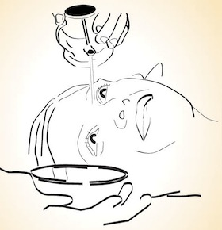

Netradhara |
|  |
|
It involves mild pouring of herbal decoction through the inner corners of the eyes . Medicinal decoction is
carefully poured through the inner end of the eye and let to flow through the whole eye. The process is repeated
for both eyes, a number of times. Medicine enters the channels of eyes and head, washes out the dirt and at the
same time reduces inflammations, if any |